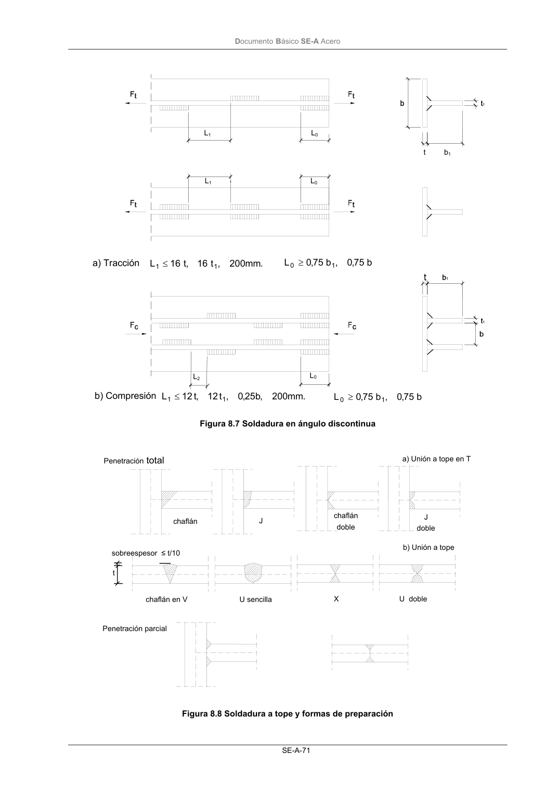

DB-SE-A · 8.6.1 Disposiciones constructivas y clasificación · versión 2007-10-23 · capa oficial
Formatos: JSON compacto · Markdown · PDF fuente
Ámbito del documento · texto del ámbito · documento y tablas
ID técnico a0116 · PDF pág. 72-74 · jerarquía no validada por persona · contrastado con el literal de la página 72 (candidato tipográfico); no validado por persona · padre: a0115
8.6.1 Disposiciones constructivas y clasificación 1 Las prescripciones que siguen serán aplicables cuando los elementos a unir tienen al menos 4 mm de espesor y son de aceros estructurales soldables. 2 Soldadura en ángulo. Se utiliza para unir elementos cuyas caras de fusión forman un ángulo (α) comprendido entre 60º y 120º . Pueden ser uniones en T o de solape (figura 8.6). En el caso de uniones en T: - si α > 120º ⇒ No se considerará que se pueden transmitir esfuerzos; - si α < 60º ⇒ Se considerará como soldadura a tope con penetración parcial. Figura 8.6 Soldadura en ángulo Se observará lo siguiente: a) los cordones deben, si es posible, prolongarse rodeando las esquinas, con el mismo espesor de garganta y longitud dos veces dicho espesor. Esto debe indicarse en los planos; b) la longitud efectiva de un cordón de soldadura en ángulo será la total del cordón siempre que se mantenga el espesor de garganta nominal (véase figura 8.9), pero no se considerarán cor- dones cuya longitud sea inferior a 40 mm o a seis veces el ancho de garganta; c) los cordones de soldadura en ángulo pueden ser continuos o discontinuos (intermitentes). Es- tos últimos se utilizan sólo para unir entre sí elementos de secciones sencillas formando pie- zas de secciones de mayor complejidad, no deben utilizarse en ambientes corrosivos y siem- pre deben cumplir las limitaciones establecidas en la figura 8.7. Debe interpretarse en ésta que: i) la ejecución de los cordones de longitud L0 en los extremos de la pieza es un detalle obligatorio; ii) la limitación de valor 0,25 b, siendo b la separación entre rigidizadores, se utiliza exclusi- vamente en casos de unión de rigidizadores a chapas o a otros elementos solicitados a compresión o cortante; d) no se utilizará un solo cordón de soldadura en ángulo para transmitir esfuerzos de tracción perpendiculares a su eje longitudinal. 3 Soldadura a tope. Una soldadura a tope es de penetración total si la fusión entre el material base y el de aportación se produce en todo el espesor de la unión; se define como de penetración parcial, cuando la penetración sea inferior a dicho espesor. En ambos casos el tipo de unión podrá ser a tope o a tope en T (figura 8.8). 4 Se evitarán en lo posible las configuraciones que induzcan el desgarro laminar. Para ello: a) se tratarán de evitar uniones en las que la dirección principal de las tensiones de tracción sea transversal a la dirección de laminación de las chapas que se unen (fuerzas en la dirección del espesor); b) cuando no sea posible evitar este tipo de uniones, se tomarán medidas para minimizar la po- sibilidad de que se produzca desgarro laminar en las chapas (por ejemplo, en uniones con chapa frontal (8.8.4), los tornillos reducen el riesgo de dicho tipo de rotura). Unión en solape Unión en T DocumentoBásico SE-A Acero SE-A-71 Figura 8.7 Soldadura en ángulo discontinua Figura 8.8 Soldadura a tope y formas de preparación b 75 ,0 , b 75 ,0 L 1 0≥ L1 L1 . mm 200 , t 16 ,t 16 L 1 1≤ L0 L0 L0 L2 a) Tracción b) Compresión t b1 b 75 ,0 , b 75 ,0 L 1 0≥ . mm 200 ,b 25 ,0 , t 12 ,t 12 L 1 1≤ chaflán chaflán doble J J doble chaflán en V U sencilla U doble X Penetración parcial Penetración total a) Unión a tope en T b) Unión a tope t sobreespesor ≤ t/10 DocumentoBásico SE-A Acero SE-A-72


PDF fuente redistribuible: copia fiel enlazada en esta página (SHA256 verificado).